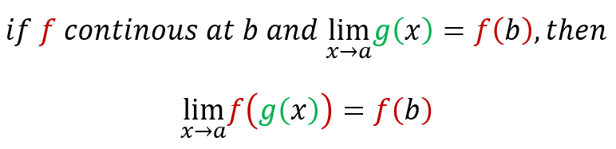
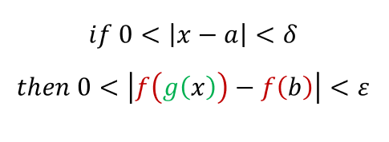
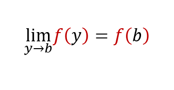
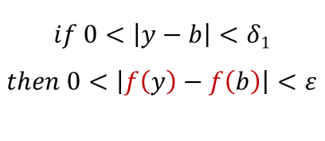
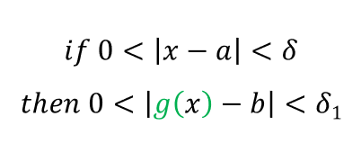

The theorem we want to prove states:
Let [ε > 0] be given. We want to find a number [δ > 0] such that:
Since f is continous at b:
So there exists [δ1 > 0], such that:
Since limx->a g(x) = b, then there exists [δ > 0] such that:
Combining these two statements, we see that whenever 0 < |x - a| < δ we have |g(x) - b| < δ 1, which implies that |f(g(x)) - f(b)| < ε. Therefore, we have proved that limx->a f(g(x)) = f(b).